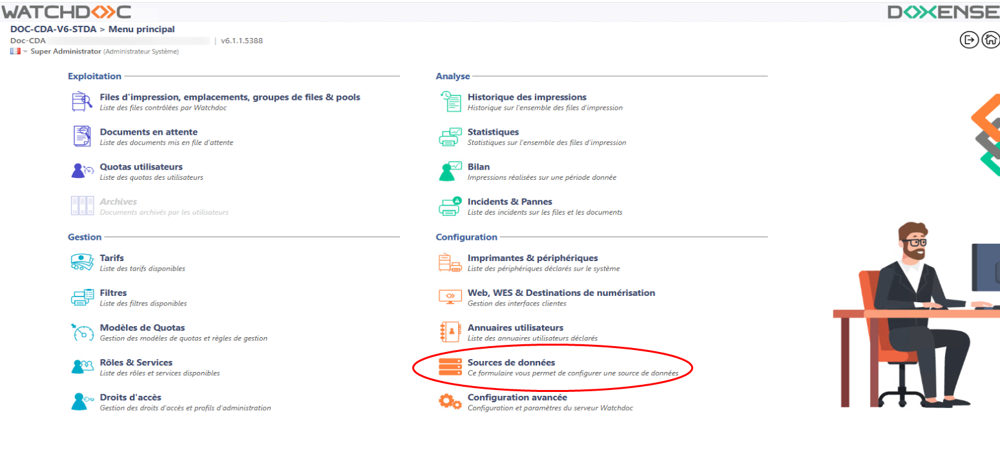
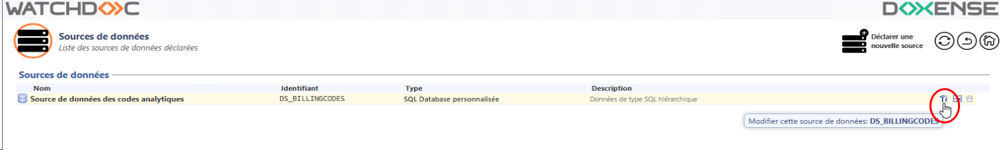
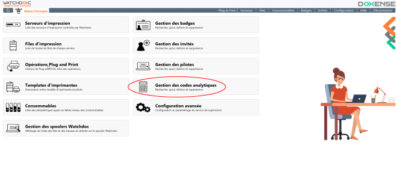
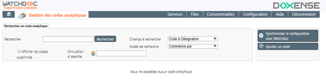
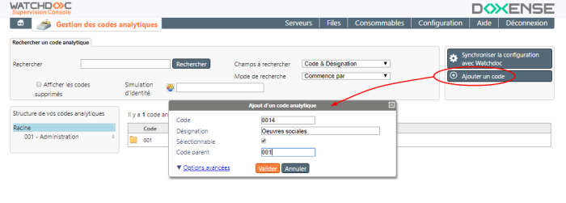
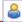
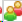
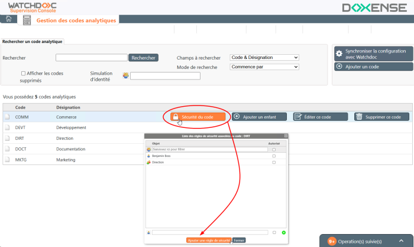
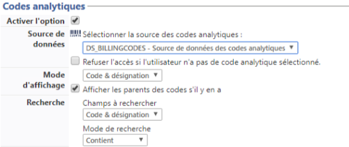

Procédure
L'activation de la fonction Codes analytiques comprend :
-
la déclaration de la base dans Watchdoc (si vous n'utilisez pas la base standard) ;
-
la création et configuration des codes dans la Console de supervision (WSC) : les codes analytiques sont saisis et hiérarchisés (si nécessaire) ;
-
l'activation au niveau du profil WES : pour les marques et modèles dont les WES sont, compatibles, la fonction doit être paramétrée pour permettre aux utilisateurs de saisir (ou de choisir) leur code analytique depuis l'écran du périphérique.
Reportez-vous aux contraintes de compatibilité pour savoir quels sont les WES qui sont compatibles avec cette fonction.
Déclarer la source des codes analytiques
Par défaut, les codes analytiques sont enregistrés dans une base de données standard qu'il n'est pas nécessaire de configurer.
Cependant, il est possible de modifier la source de données dans laquelle sont enregistrés les codes.
Notez que cette modification est définitive : une fois désactivée, la source de données par défaut ne peut pas être réactivée.
-
Accédez à Watchdoc en tant qu'administrateur ;
-
depuis le Menu principal, section Configuration, cliquez sur Source de données ;

-
dans la liste, cliquez sur le bouton pour éditer la source de données des codes analytiques :

-
dans l'interface Source de données, sélectionnez le type de la base dans laquelle sont enregistrés les codes ;
-
saisissez un nom et une description permettant d'identifier le fichier ;
-
indiquez les paramètres permettant d'accéder à la base de données ;
-
dans le champ Fichier, indiquez le chemin d'accès au fichier .csv contenant les données ;
-
cliquez sur Valider pour enregistrer cette source de données.
{kind=link}
Créer les codes
Pour constituer une liste de codes analytiques :
-
accédez à la Console de Supervision de Watchdoc (WSC) ;
-
depuis le Menu Principal, cliquez sur la section Gestion des codes analytiques ;

L'interface est composée de plusieurs sections :
-
une section regroupant des outils permettant de rechercher des codes analytiques et d'en créer ;
-
une section affichant la liste hiérarchisée des codes analytiques et permettant de les éditer et les compléter.

-
Dans cette interface Gestion des codes analytiques, cliquez sur le bouton Ajouter un code ;
-
dans la fenêtre Ajout d'un code analytique, remplissez les champs :
-
Code : saisissez un code correspondant à un compte, un département, un service ou une entité ;
-
Désignation : saisissez l'intitulé du compte, département, service ou entité correspondant au code ;
-
Sélectionnable : cochez la case pour que l'utilisateur puisse sélectionner le code affiché. Cette fonction permet, dans une liste hiérarchisée de rendre un code générique non-sélectionnable, alors que tous ses spécifiques le sont (par exemple, le code 001, Administration n'est pas sélectionnable, mais 0010 Achats, 0011 Comptabilité, 0012 Secrétariat et 0013 Services généraux sont sélectionnables) ;
-
Code parent : dans le cas d'une liste hiérarchisée, indiquez dans ce champ le code dont dépend le code en cours de saisie.

-
-
Au besoin, cliquez sur le lien Options avancées pour saisir des spécifiques à vos besoins, autres que le code et la désignation. Il peut s'agir, par exemple, du nom d'un responsable ou de la localisation du service, etc.
Sécuriser les codes
Il est possible de sécuriser les codes analytiques mis à disposition des utilisateurs, de sorte que ces codes puissent être réservés à certains utilisateurs. Par exemple, "CMPT", code attribué au service comptabilité peut être sécurisé de manière à n'être utilisé que par les membres du service Comptabilité et par un stagiaire associé à ce service.
Pour sécuriser un code :
-
dans la liste à droite du code, cliquez sur le bouton Sécurité du code ;
-
dans l'interface Liste des règles de sécurité, cliquez sur le bouton Ajouter une règle de sécurité ;
-
cliquez sur l'icone

pour saisir le nom d'un utilisateur ou
pour saisir le nom d'un groupe d'utilisateurs ; -
dans le champ, saisissez le nom d'un utilisateur ou le nom d'un groupe d'utilisateurs ;
-
cliquez sur le bouton pour ajouter l'utilisateur ou le groupe saisi ;
-
confirmez l'ajout du code en cliquant sur le bouton Valider ;
-
réitérez l'opération si vous souhaitez ajouter des utilisateurs ou un groupe d'utilisateurs :
-
cliquez sur le bouton Fermer une fois les utilisateurs / groupes d'utilisateurs associés au code :

Activer les Codes analytiques dans le profil WES
Cette étape consiste à activer dans Watchdoc les codes créés dans la console de Supervision Watchdoc WSC. L'activation doit être effectuée au niveau de chaque profil WES proposant la fonction.
Pour activer la fonction :
-
accédez à l'interface d'administration de Watchdoc ;
-
depuis le Menu principal, dans la section Configuration, cliquez sur Web & WES ;
-
dans la liste, sélectionnez le WES pour lequel vous souhaitez activer la fonction ;
-
vous accédez à l'interface de paramétrage du profil WES.
-
dans la section Codes analytiques :=
-
Activer l'option : cochez la case pour activer la fonction ;
-
Source de données : dans la liste, sélectionnez la source dans laquelle sont enregistrés les codes. Par défaut, il s'agit de la source DS_BILLINGCODES ;
-
Champs à rechercher : un outil permet à l'utilisateur de mener une recherche parmi les codes existants. Indiquez dans ce paramètre le ou les champs sur lesquels doit porter la recherche : soit dans le champ code uniquement, soit dans le champ Désignation correspondant au code, soit dans ces deux champs simultanément).
-
Mode de recherche : précisez la manière dont doit fonctionner la recherche :
-
commence par : permet de rechercher les codes commençant par la chaîne de caractères saisie par l'utilisateur comme critère de recherche;
-
contient : permet de rechercher les codes ou désignations contenant la chaîne de saisie par l'utilisateur comme critère de recherche.
-
-
cliquez sur pour valider l'activation de la fonction dans le profil WES.
